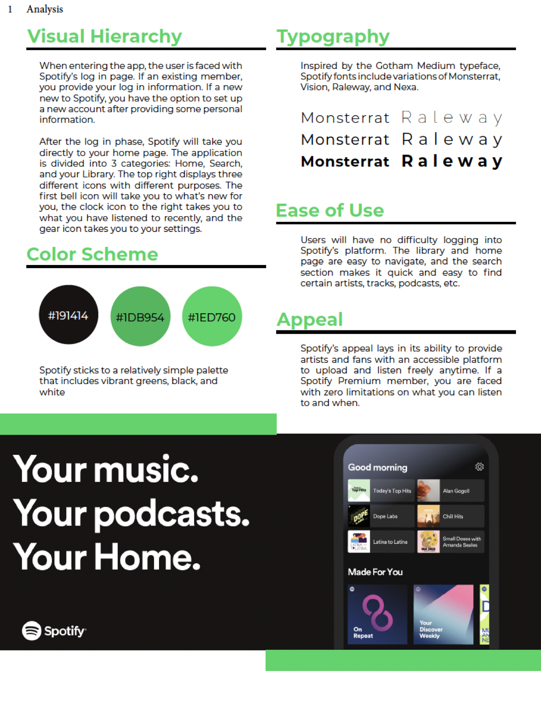
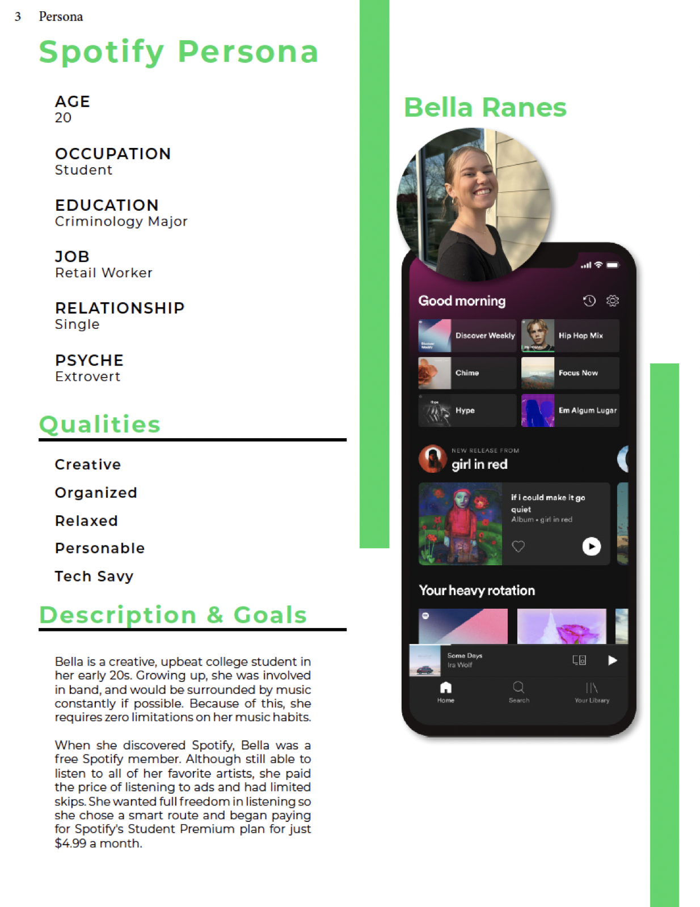
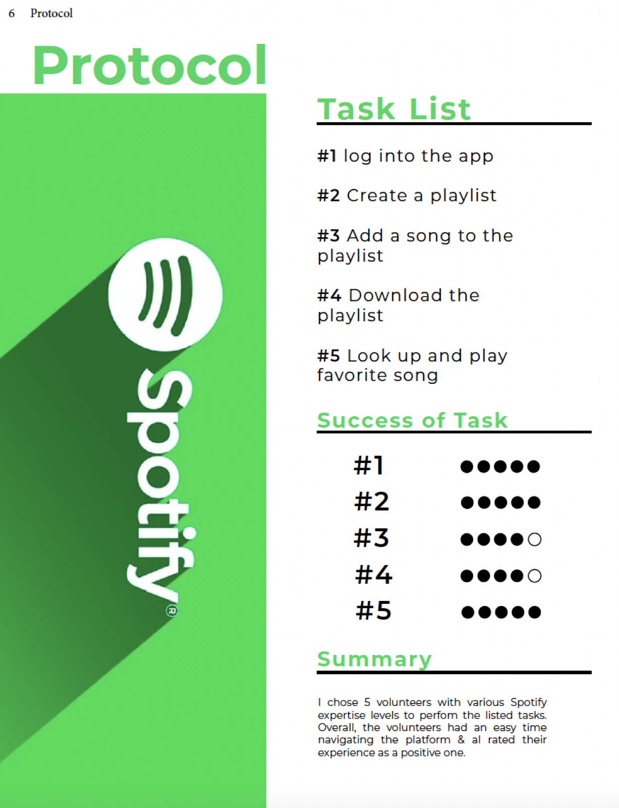

An in-depth UX evaluation of Spotify — covering its brand identity, user persona, and interface structure.

A research report analyzing Spotify across brand identity, visual hierarchy, typography, color, and ease of use — grounded in a user persona and validated with a small usability study. The goal was to understand why the product feels effortless and where its experience could still improve.
I broke down Spotify's visual hierarchy, its Montserrat- and Gotham-inspired typography, and a restrained, green-led color palette. Together these create a clean, recognizable interface where the library and home page are easy to navigate and quick to scan across playlists, tracks, podcasts, and more.

To ground the evaluation in real goals and frustrations, I built a persona: Bella Ranes, a 20-year-old creative, organized, tech-savvy college student who discovered Spotify early and stayed for the freedom of listening to her favorite artists anytime — for just a few dollars a month.

I ran a protocol with five volunteers of varying Spotify experience through five core tasks — logging in, creating a playlist, adding and downloading songs, and playing a favorite track. Volunteers moved through the tasks with strong success rates and rated the overall experience as a positive one.
